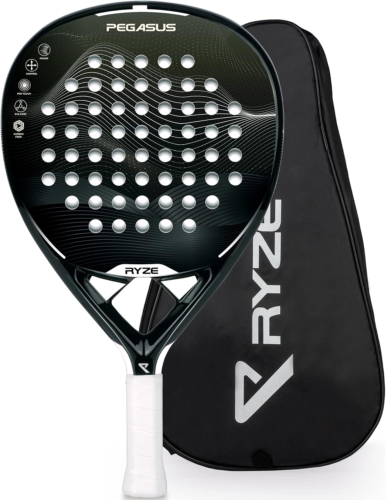

You do not need to spend £250 to enjoy padel. If you are just starting out, playing socially, or buying a racket to try the sport before committing to something more serious, the sub-£100 bracket has more genuine options than most people realise. We have reviewed and scored every racket in this price range available in the UK market. Here is the honest breakdown — ranked by score, not by price or brand.
Ryze Pegasus
The Ryze Pegasus is the standout racket under £100 in the UK right now, and the reason is simple: it is made from 100% carbon fibre. Every other racket in this price bracket uses fibreglass or a carbon-fibreglass hybrid on the face, which limits stiffness and therefore spin and speed. The Pegasus does not have that compromise.
The teardrop shape positions the sweet spot slightly above centre, giving you more pop on your drives and smashes compared to a round racket while remaining genuinely playable for beginners stepping up. The EVA foam core is responsive without being punishing. Power hits with conviction, touch exchanges feel connected.
At £89, the Pegasus sits at the top of the under-£100 bracket, and it earns that price. If you are buying your first racket and want something you will not immediately outgrow, or if you are an improving player who wants a backup frame without spending £200+, this is the one to get.
Pros
- Full 100% carbon fibre face — rare under £100
- Versatile teardrop shape suits beginners and intermediates
- Strong all-round scores across power, control and touch
- Will last through an entire season of regular play
Cons
- Priciest in the sub-£100 bracket at £89
- Less forgiving than round-shape alternatives
- Ryze is a smaller brand — less widely stocked
Raquex Eclipse

The Raquex Eclipse is a UK-designed full carbon padel racket that manages to score 87 on control at just £69 — one of the sharpest value propositions in our entire review database. Raquex is a small UK-based brand, which keeps costs lean while delivering a genuinely well-engineered frame.
The round shape and low balance point make the Eclipse the most forgiving racket on this list. The sweet spot is centred, which means mishits still produce playable shots, and the soft EVA core gives excellent feel on drops and resets. For a beginner building their game from scratch, those two things matter far more than raw power.
The control and touch scores (87 and 86 respectively) actually outperform several rackets in the £150–£200 range on those specific dimensions. You are not buying a compromise here — you are buying a racket that is genuinely good at what it is designed to do.
Pros
- Exceptional control at £69 — genuinely impressive
- UK-designed with strong build quality
- Forgiving round shape ideal for beginners
- Full carbon face at entry price
Cons
- Low power output limits progression at intermediate+ level
- Round shape lacks punch for offensive play
- Less visible brand than Head or Wilson
Head Evo Speed

Head is one of the most trusted names in padel globally, and the Evo Speed brings that reliability to the sub-£100 bracket. The teardrop shape is oversized compared to mid-range teardrops, which increases the effective sweet spot area and makes it more forgiving than a standard teardrop — a smart design choice for beginners.
The standout technology here is Innegra, a high-performance polymer fibre woven into the frame that absorbs vibration and shock. This makes the Evo Speed noticeably arm-friendly on repeated striking, which matters for players who are still developing proper technique and absorbing impacts inefficiently.
The touch score of 86 is the joint-highest in this bracket, and it shows on court during net exchanges. The racket is not going to win any power contests, but it places the ball accurately and communicates feel back to the hand better than you might expect at this price.
Pros
- Innegra technology reduces vibration — great for arm comfort
- Oversized teardrop is very forgiving
- Excellent touch score of 86
- Head reliability and quality control
Cons
- Fibreglass face limits power ceiling
- Slightly higher priced than some round alternatives
- Not a huge step up from pure round options
Dunlop Padel Bat Lumina

The Dunlop Lumina is an Amazon-exclusive beginner racket that combines a hybrid head shape with a Pro EVA foam core. The hybrid head is wider than a standard round frame but avoids the sharp angles of a true teardrop, which gives it the forgiveness of a round with slightly more hitting area in the upper zone.
Dunlop is a well-established sports brand with strong quality control, and the Lumina reflects that. Construction feels solid, the grip is comfortable out of the box, and the Pro EVA core — despite the premium-sounding name — delivers consistent, predictable feel on every shot. It is not exciting, but it is dependable.
At £89, it sits level with the Ryze Pegasus in price but scores lower overall due to the fibreglass face and the Pegasus's more versatile teardrop shape. That said, the Lumina's hybrid head and Dunlop brand reliability make it a strong choice for beginners who prefer buying from a name they recognise.
Pros
- Amazon Prime eligible — fast delivery and easy returns
- Dunlop build quality and brand trust
- Hybrid head shape balances forgiveness and hitting area
- Pro EVA core gives consistent, predictable feel
Cons
- Amazon-exclusive limits in-store try-before-you-buy
- Not the best value at £89 vs the Ryze Pegasus
- Fibreglass face limits performance ceiling
Head Extreme Evo

The Head Extreme Evo is the lightest racket on this list at just 350g. For certain players — those with smaller frames, those returning from injury, or younger juniors — that weight reduction is a meaningful advantage. A lighter racket is easier to sustain through long rallies and reduces fatigue during extended sessions.
The teardrop shape and soft EVA core follow a similar philosophy to the Evo Speed, though without the Innegra technology. The result is a slightly less cushioned feel, which is reflected in the marginally lower touch score. On court, the Extreme Evo is straightforward — it does not do anything brilliantly but it does everything adequately.
At £74 it represents decent value, though we would point most buyers towards the Raquex Eclipse at £69 for better control scores, or the Evo Speed at £79 for the Innegra arm protection.
Pros
- Lightest racket in this bracket at 350g
- Good choice for juniors or players recovering from injury
- Head brand quality and reliability
- Competitive price at £74
Cons
- No Innegra technology unlike the Evo Speed
- Lower scores than Raquex Eclipse at a higher price
- Nothing truly distinctive at this price point
Wilson Optix V1

Wilson is one of the biggest names in racket sports globally, and the Optix V1 is their entry point into padel. It uses an oversized round head with Wilson's Ultra Foam core — a particularly soft compound that maximises the effective sweet spot and makes off-centre shots feel gentler than most budget rackets.
The control and touch scores of 84 and 85 are both strong for a £74 racket, reflecting the foam's cushioning effect. Where Wilson's engineering translates most clearly is in consistency — the Optix V1 produces predictable results across a wide range of contact points, which is exactly what a beginner needs when they are still developing timing and footwork.
Power is the lowest score in the lineup at 68, which is the natural trade-off for the ultra-soft core. But at this level, that is the right trade-off. Anyone buying this racket does not need more power — they need to keep the ball in play, and the Optix V1 makes that easier than almost anything else under £100.
Pros
- Wilson brand confidence and quality assurance
- Ultra Foam core is the most forgiving in this bracket
- Strong control and touch scores
- Oversized sweet spot makes mishits more manageable
Cons
- Lowest power score of all rackets reviewed here
- Ultra Foam can feel dead compared to firmer alternatives
- No notable technology differentiator beyond foam
How to Choose a Padel Racket Under £100
Shape: round or teardrop?
Most rackets under £100 are round or teardrop shapes, which is the right call for beginners. Round shapes (Raquex Eclipse, Wilson Optix V1) have a central sweet spot and maximum forgiveness. Teardrop shapes (Ryze Pegasus, Head Evo Speed, Head Extreme Evo) sit the sweet spot slightly higher and offer a bit more punch. Start round if you are a complete beginner. Go teardrop if you have played a handful of times and feel ready for a little more pop.
Carbon vs fibreglass face
The Ryze Pegasus is the only racket on this list with a full carbon fibre face. Everything else uses fibreglass or a hybrid. Carbon is stiffer, which means more energy transfer from your swing to the ball — more power, more spin. Fibreglass flexes more, which adds comfort and feel but caps your power ceiling. At beginner level this difference is real but not decisive. Once you are playing regularly and developing better technique, you will start to feel the limitations of fibreglass.
Core material
All rackets in this bracket use some form of soft or medium EVA foam. Harder EVA variants give more power; softer variants give more comfort and feel. If you have any history of tennis elbow or shoulder issues, prioritise the softest core you can find — specifically the Head Evo Speed with its Innegra vibration dampening or the Wilson Optix V1 with its Ultra Foam.
When to move up
A sub-£100 racket will serve you well for your first 6 to 12 months of regular play. Once you are playing two or more times a week and starting to develop consistent technique, you will begin to feel the power ceiling of budget frames. At that point, look at the £150–£220 bracket — the Babolat Technical Viper 3.0 and Oxdog Hyper Pro 2.0 are the natural next steps from any of the rackets above.
Quick summary: Best overall is the Ryze Pegasus (£89, Score 83). Best value for pure control is the Raquex Eclipse (£69, Score 80). Best for arm comfort is the Head Evo Speed (£79, Score 79).
Frequently Asked Questions
Ready to See All Rackets?
Browse our full database of 18 reviewed and scored rackets, filtered by level, budget and playing style.